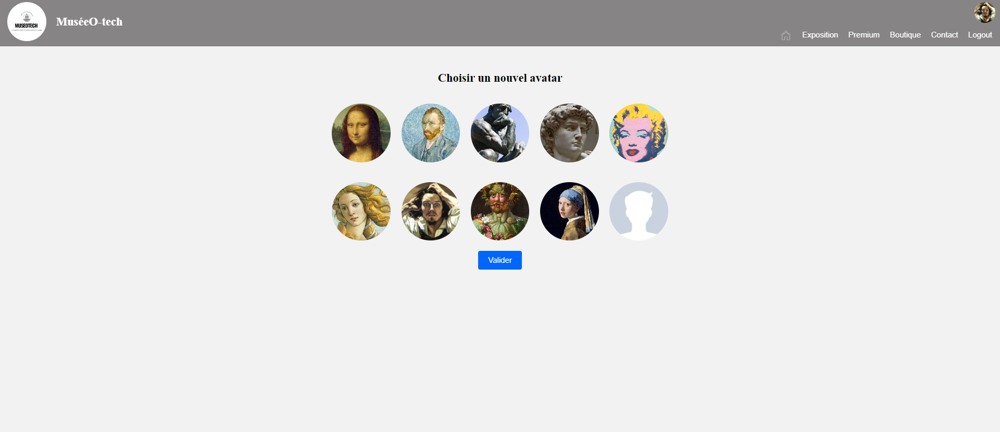
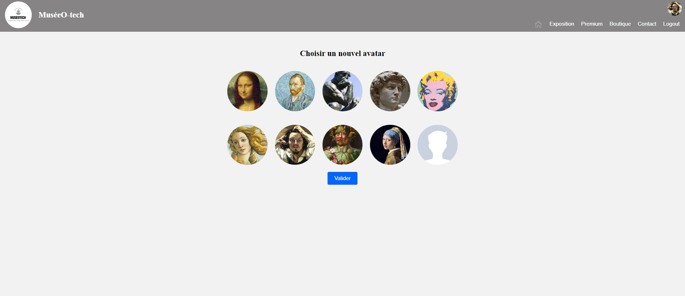

Stage en Cybersécurité
-
Contribution à l'obtention de la certification PASSI pour BMB GROUP
Pendant mon stage chez BMB, j'ai rejoint le service de cybersécurité, qui occupe une position centrale dans la démarche d'obtention de la certification PASSI pour l'entreprise. En tant que membre de ce service, j'ai contribué de manière significative à l'amélioration et à la révision de 30 politiques de sécurité.
Mon rôle consistait à apporter des modifications tant au niveau du design que du contenu, tout en optimisant leur application pratique au sein de l'entreprise.
De plus, j'ai été impliqué dans la mise en place des mesures de sécurité physique, utilisant des outils tels que des tableaux Excel pour assurer que BMB respecte les recommandations rigoureuses de la certification PASSI en la matière.
Stage avec Laravel et C#
-
Création de pages web pour gérer toutes les connexions des client chez SoftMachine
Pendant mon stage, j'ai eu l'opportunité de travailler sur la gestion avancée des connexions utilisateur en utilisant le framework Laravel, ce qui a été une expérience extrêmement enrichissante.
J'ai développé une page web dédiée à cette tâche, utilisant Laravel pour faciliter la création d'une interface utilisateur élégante et conviviale. Cette technologie m'a permis d'optimiser le processus de gestion des utilisateurs et des connexions.
De plus, j'ai eu un accès en temps réel à la base de données des utilisateurs, ce qui m'a permis de mettre en place des fonctionnalités avancées de gestion des utilisateurs, améliorant ainsi l'expérience globale des visiteurs du site.
Mon travail comprenait également la création d'un système de gestion de contenu personnalisé, facilitant ainsi les futures mises à jour administratives et améliorant la maintenance du site.
Développement WEB
-
Création d'un Site de Visite de Musée
Conception, développement et gestion d'un site web interactif permettant aux visiteurs de découvrir les différentes structures et tableaux du musée en ligne.
Utilisation de technologies avancées telles que PHP, HTML et CSS pour une interface élégante et conviviale.
Mise en place d'un système de gestion de contenu personnalisé pour faciliter les mises à jour administratives.
Game Fight
-
Donjons Fight - Jeu de combat
Jeu de combat où les joueurs affrontent des boxeurs légendaires. Niveaux, expérience et réanimation disponibles.
Personnages avec attributs (force, dextérité, etc.) déterminant les compétences en combat.
Stratégie, progression de niveau et économie interne pour améliorations.
Devenez un champion de la boxe dans "Donjons Fight" !
Algo et Programmation C
-
Développement du jeu "Qwrikle"
Relevé les défis à chaque étape de développement
Responsable de la conception et de la mise en œuvre du jeu
Analyse d'algorithmes et raisonnement logique pour optimiser les fonctionnalités du jeu
Réseaux
-
Création du réseau d'entreprise en utilisant Cisco
Configuration de différents services tels que HTTP, FTP
Mise en place des services réseau tels que DHCP et DNS
Élaboration des mesures de sécurité et des stratégies de préservation

 
